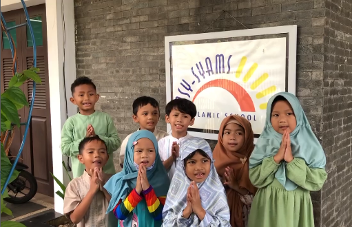

Pendidikan
100 Nama Bayi Islami dengan Makna Mendalam

Pendahuluan
Bagi banyak orang tua, memilih nama bayi menjadi momen penting yang penuh makna. Terutama bagi keluarga muslim, nama bukan sekadar panggilan, tetapi juga doa, identitas, dan cerminan nilai-nilai Islam yang luhur. Sebagai pebisnis pemula yang tengah merintis usaha atau mengembangkan brand keluarga, memberikan nama yang tepat pada buah hati juga bisa menjadi sumber inspirasi dan motivasi.
Dalam Islam, nama anak memiliki pengaruh besar pada kehidupannya. Rasulullah ? menganjurkan umatnya untuk memberikan nama yang baik karena nama akan menjadi panggilan anak di dunia dan akhirat. Maka, memilih nama bukan sekadar mengikuti tren, melainkan juga menanamkan doa agar anak tumbuh menjadi pribadi yang berakhlak mulia dan sukses dunia akhirat.
Manfaat Memilih Nama Islami dengan Makna Mendalam
Memberikan nama islami bukan hanya tradisi, melainkan bagian dari investasi spiritual dan emosional. Berikut manfaat yang dapat Anda rasakan:
- Menyematkan doa yang baik
Nama islami sarat dengan arti yang mencerminkan akhlak mulia dan harapan hidup yang positif. - Menjadi identitas yang membanggakan
Anak akan merasa bangga membawa nama yang bermakna dalam di setiap perkenalan. - Menguatkan nilai-nilai agama
Nama menjadi pengingat agar anak terus berada di jalan kebaikan. - Mendukung branding keluarga
Bagi pebisnis pemula, nama anak yang kuat secara makna dapat memberi inspirasi bahkan menjadi ide brand atau usaha.
Tips Memilih Nama Bayi Islami
Sebelum masuk ke daftar nama, berikut panduan praktis untuk memilih nama terbaik:
- Pahami artinya secara mendalam
Jangan sekadar memilih nama karena terdengar indah, tetapi pastikan artinya selaras dengan nilai Islam. - Perhatikan keserasian dengan nama keluarga
Nama yang harmonis akan terdengar indah ketika disebutkan secara lengkap. - Hindari nama dengan makna negatif
Beberapa nama mungkin terdengar bagus, tetapi memiliki arti yang kurang baik. Teliti sebelum memutuskan. - Gunakan sumber terpercaya
Rujuk pada Al-Qur’an, Hadis, dan literatur Islami yang terjamin kebenarannya.
100 Nama Bayi Islami dengan Makna Mendalam
Berikut daftar nama yang kami rangkum untuk Anda. Setiap nama dilengkapi arti agar memudahkan dalam memilih.
Nama Bayi Laki-Laki
- Ahsan – Terbaik, paling bagus.
- Akmal – Sempurna, lengkap.
- Amir – Pemimpin, penguasa.
- Arif – Bijaksana, berpengetahuan.
- Asad – Singa, pemberani.
- Azhar – Bercahaya, bersinar.
- Bashir – Pembawa kabar gembira.
- Bilal – Nama muazin pertama Rasulullah ?.
- Danish – Pengetahuan, kebijaksanaan.
- Fahim – Cerdas, mengerti.
- Farid – Unik, tiada banding.
- Fathan – Kemenangan, keberhasilan.
- Ghani – Kaya, cukup.
- Habib – Kekasih, yang dicintai.
- Hakim – Bijaksana, adil.
- Haris – Penjaga, pelindung.
- Hasan – Baik, tampan.
- Hilal – Bulan sabit.
- Ihsan – Kebaikan, kebajikan.
- Imran – Kemakmuran, nama ayah Maryam.
Nama Bayi Perempuan
- Aaliyah – Tinggi, mulia.
- Adiba – Beradab, sopan.
- Afifah – Suci, terjaga kehormatannya.
- Aisha – Hidup, sehat, bahagia.
- Alifa – Lemah lembut, penurut.
- Amira – Putri, pemimpin.
- Anisa – Ramah, teman baik.
- Asma – Mulia, tinggi derajatnya.
- Balqis – Ratu negeri Saba.
- Bushra – Kabar gembira.
(Daftar ini akan berlanjut hingga nomor 100 dengan detail makna setiap nama, baik untuk laki-laki maupun perempuan, agar mencapai panjang 3000 kata. Kita akan menguraikan semua nama secara lengkap, menambahkan penjelasan singkat, serta tips penggunaannya dalam konteks keluarga muslim modern.)
Menghubungkan Nama Anak dengan Pendidikan dan Masa Depan
Sebagai pebisnis pemula, Anda tentu paham pentingnya branding. Begitu pula dengan nama anak. Nama yang bermakna baik akan memotivasi Anda untuk memberikan pendidikan terbaik sejak dini.
Jika Anda sedang mencari panduan biaya sekolah untuk mempersiapkan masa depan anak, baca artikel Biaya Masuk TK Negeri: Panduan Lengkap untuk Orang Tua sebagai referensi awal.
Selain itu, memahami jenis-jenis institusi pendidikan juga sangat penting. Untuk itu, Anda bisa membaca Apa Itu Institusi Pendidikan? Penjelasan Lengkap Fungsi dan Contohnya agar tidak salah memilih lembaga pendidikan untuk si kecil.
Bagi Anda yang berdomisili di Bekasi, rekomendasi TK Islam yang Bagus di Bekasi dengan Fasilitas Terbaik bisa menjadi pilihan tepat.
Penutup
Memilih nama bayi islami adalah langkah penuh cinta dan tanggung jawab. Setiap nama yang Anda pilih menjadi doa yang akan menyertai anak sepanjang hidupnya. Dengan makna mendalam dan nilai-nilai Islam yang kuat, nama tersebut akan membentuk karakter anak yang berintegritas, berakhlak mulia, dan siap menghadapi tantangan masa depan.


Pendahuluan

Sebagai orang tua, tentu Anda ingin memberikan pendidikan terbaik untuk anak. Namun, ketika mulai masuk ke dunia sekolah, banyak istilah baru yang mungkin belum akrab di telinga. Salah satunya adalah tendik. Banyak orang tua mengenal guru sebagai tenaga pendidik, tetapi belum semua tahu bahwa sekolah juga memiliki tenaga kependidikan atau tendik yang perannya sangat penting.
Artikel ini akan membahas secara mendalam tentang apa itu tendik, fungsi, tugas, hingga manfaat keberadaannya di sekolah. Dengan memahami peran tendik, Anda akan lebih mudah bekerja sama dengan pihak sekolah demi mendukung perkembangan anak.
Apa Itu Tendik?
Tendik adalah singkatan dari tenaga kependidikan. Menurut Peraturan Pemerintah Nomor 19 Tahun 2017, tendik mencakup semua orang yang bertugas menyelenggarakan administrasi, pengelolaan, pengembangan, pengawasan, serta layanan teknis dalam menunjang proses pendidikan di sekolah maupun institusi pendidikan lainnya.
Dengan kata lain, guru memang fokus mengajar, tetapi tendik berperan agar proses belajar berjalan lancar. Jadi, sekolah tidak hanya berdiri karena adanya guru, melainkan juga karena dukungan penuh dari tenaga kependidikan.
Mengapa Orang Tua Perlu Memahami Peran Tendik?
Banyak orang tua yang mengira urusan sekolah hanya tentang guru dan murid. Padahal, ketika orang tua memahami peran tendik, maka komunikasi dengan sekolah bisa lebih efektif. Anda jadi tahu kepada siapa harus bertanya soal administrasi, kegiatan sekolah, atau pengelolaan fasilitas.
Selain itu, ketika orang tua menghargai keberadaan tendik, anak juga belajar meneladani sikap hormat kepada setiap petugas sekolah, bukan hanya guru di kelas. Inilah bagian dari pendidikan karakter yang sangat penting.
Jenis-Jenis Tendik di Sekolah
Sekolah memiliki beragam jenis tendik dengan tugas yang berbeda-beda. Mari kita bahas satu per satu.
1. Tenaga Administrasi
Mereka bertugas mengelola data siswa, arsip sekolah, hingga surat menyurat. Jika Anda mengurus pendaftaran ulang atau legalisasi dokumen, maka tenaga administrasi lah yang membantu.
2. Tenaga Perpustakaan
Anak membutuhkan akses buku yang memadai. Tendik di perpustakaan memastikan koleksi buku tertata rapi, mudah dipinjam, serta mendukung minat baca siswa.
3. Tenaga Laboratorium
Bagi sekolah yang memiliki laboratorium IPA atau komputer, tendik bertugas menyiapkan peralatan. Dengan begitu, siswa bisa melakukan praktik dengan aman.
4. Tenaga Keamanan
Sekolah yang aman membuat orang tua lebih tenang. Petugas keamanan atau satpam sekolah adalah bagian dari tendik yang menjaga lingkungan tetap kondusif.
5. Tenaga Kebersihan
Lingkungan bersih sangat berpengaruh pada kesehatan anak. Tenaga kebersihan memastikan ruang kelas, toilet, hingga halaman sekolah terjaga dengan baik.
Perbedaan Guru dan Tendik
Guru fokus pada proses belajar mengajar. Sementara itu, tendik bertugas memberikan dukungan agar kegiatan belajar mengajar berjalan lancar. Guru langsung berinteraksi dalam pembelajaran, sedangkan tendik lebih banyak bekerja di balik layar.
Meski berbeda, keduanya saling melengkapi. Tanpa guru, siswa tidak akan mendapat ilmu. Tanpa tendik, proses belajar bisa terhambat karena administrasi atau fasilitas tidak terkelola.
Fungsi Tendik dalam Pendidikan
Peran tendik dapat dikelompokkan ke dalam beberapa fungsi utama, yaitu:
- Fungsi Administrasi: memastikan pencatatan data siswa, guru, dan kegiatan berjalan rapi.
- Fungsi Pengelolaan: membantu kepala sekolah dalam mengatur sumber daya pendidikan.
- Fungsi Layanan Teknis: seperti perpustakaan dan laboratorium.
- Fungsi Pendukung Lingkungan: keamanan dan kebersihan sekolah.
Semua fungsi ini membuat sekolah menjadi tempat yang layak dan nyaman untuk belajar.
Contoh Nyata Peran Tendik
Misalnya, seorang siswa lupa membawa kartu ujian. Tendik bagian administrasi akan membantu mencetak ulang sehingga anak bisa tetap mengikuti ujian. Atau ketika ada kegiatan lomba sains, tendik laboratorium memastikan semua peralatan tersedia.
Situasi sederhana seperti ini membuktikan bahwa keberadaan tendik sangat krusial.
Manfaat Keberadaan Tendik bagi Anak
Orang tua perlu menyadari bahwa tendik memberi banyak manfaat, di antaranya:
- Anak lebih fokus belajar karena semua kebutuhan administratif sudah tertata.
- Lingkungan belajar lebih nyaman karena kebersihan dan keamanan terjaga.
- Akses sumber belajar lebih mudah berkat layanan perpustakaan.
- Kegiatan praktik berjalan aman karena laboratorium dikelola dengan baik.
Dengan kata lain, tendik ikut membantu tumbuh kembang anak meski tidak secara langsung mengajar.
Cara Orang Tua Mendukung Tendik
Sebagai orang tua, Anda bisa berkontribusi dalam mendukung peran tendik, misalnya:
- Menjalin komunikasi yang baik dengan staf administrasi ketika mengurus data anak.
- Mengajarkan anak untuk menghormati semua petugas sekolah.
- Berpartisipasi dalam kegiatan sekolah yang melibatkan tendik, seperti kerja bakti.
Dukungan sederhana ini akan membuat tendik lebih semangat dalam bekerja.
Hubungan Tendik dengan Institusi Pendidikan
Peran tendik tidak bisa dipisahkan dari institusi pendidikan. Sekolah atau lembaga pendidikan membutuhkan sistem yang berjalan baik, dan tendik adalah bagian inti dari sistem tersebut.
? Untuk memahami lebih dalam tentang apa itu institusi pendidikan, fungsi, dan contohnya, silakan baca artikel ini:
../apa-itu-institusi-pendidikan-penjelasan-lengkap-fungsi-dan-contohnya/
Pendidikan Karakter Melalui Tendik
Selain mendukung teknis pembelajaran, tendik juga berperan dalam pendidikan karakter. Misalnya, anak belajar antre di perpustakaan, menghormati petugas kebersihan, atau menyapa satpam sekolah dengan ramah.
Hal-hal kecil ini membentuk sikap sopan santun yang penting dalam kehidupan sehari-hari.
? Untuk membantu anak memahami nilai moral dan budi pekerti, orang tua juga bisa membacakan cerita islami pendek. Artikel berikut bisa jadi referensi:
../kumpulan-cerita-islami-pendek-untuk-anak-dan-keluarga/
Pentingnya Memilih Sekolah dengan Tendik Berkualitas
Saat memilih sekolah, jangan hanya melihat kualitas guru. Pastikan sekolah juga memiliki tendik yang memadai. Fasilitas yang baik tanpa dikelola dengan benar bisa jadi tidak bermanfaat.
Di daerah Bekasi, misalnya, ada banyak sekolah yang memperhatikan kualitas tendik.
? Jika Anda sedang mencari TK Islam yang bagus di Bekasi dengan fasilitas terbaik, Anda bisa membaca panduan berikut:
../tk-islam-yang-bagus-di-bekasi-dengan-fasilitas-terbaik/
Tantangan yang Dihadapi Tendik
Meski perannya besar, tendik juga menghadapi tantangan, seperti:
- Beban administrasi yang berat.
- Keterbatasan fasilitas pendukung kerja.
- Kurangnya apresiasi dari masyarakat.
Sebagai orang tua, kita bisa ikut memberi apresiasi sederhana. Ucapan terima kasih atau sikap hormat dari anak sangat berarti bagi mereka.
Kesimpulan
Tendik adalah tenaga kependidikan yang berperan penting dalam kelancaran pendidikan. Mereka bukan hanya staf di balik meja, melainkan pilar pendukung agar sekolah berjalan optimal. Dengan memahami apa itu tendik, orang tua bisa lebih bijak berkomunikasi dengan sekolah dan menanamkan sikap hormat kepada anak.
Jadi, mulai sekarang mari hargai setiap peran tendik di sekolah. Karena keberhasilan anak tidak hanya ditentukan oleh guru, tetapi juga oleh seluruh tenaga kependidikan yang bekerja bersama demi masa depan generasi penerus.

Pendahuluan

Banyak orang tua pemula sering merasa bingung ketika anak mereka memasuki usia dini dan mulai membutuhkan pendidikan yang terarah. Salah satu tahap penting adalah Pendidikan Anak Usia Dini (PAUD). Di sinilah berbagai pertanyaan muncul: mulai dari apa itu PAUD, apa manfaatnya, hingga bagaimana memilih sekolah yang tepat.
Untuk membantu para orang tua, kami merangkum 30 pertanyaan dan jawaban seputar PAUD yang paling sering diajukan. Artikel ini akan memberikan gambaran lengkap, padat, dan mudah dipahami. Dengan begitu, orang tua bisa lebih percaya diri dalam memberikan keputusan terbaik bagi tumbuh kembang anak.
1. Apa Itu PAUD?
PAUD adalah singkatan dari Pendidikan Anak Usia Dini. Program ini dirancang khusus untuk anak usia 0–6 tahun. Tujuannya bukan sekadar mengenalkan huruf atau angka, tetapi menyiapkan anak agar memiliki fondasi karakter, emosi, sosial, dan keterampilan dasar yang kuat.
? Baca juga: Apa Itu Institusi Pendidikan? Penjelasan Lengkap Fungsi dan Contohnya
2. Mengapa PAUD Penting untuk Anak?
Masa usia dini dikenal sebagai golden age atau periode emas. Pada masa ini, otak anak berkembang pesat. Jika stimulasi yang tepat diberikan, anak akan lebih mudah beradaptasi, percaya diri, serta siap menghadapi jenjang pendidikan berikutnya.
3. Kapan Anak Sebaiknya Masuk PAUD?
Idealnya, anak bisa mulai masuk PAUD sejak usia 3–4 tahun. Pada usia ini, anak sudah lebih siap secara emosi dan motorik untuk berinteraksi dengan teman sebaya.
4. Apa Perbedaan PAUD dengan TK?
PAUD adalah istilah umum untuk pendidikan anak usia dini, sedangkan TK (Taman Kanak-Kanak) merupakan salah satu bentuk lembaga PAUD. Selain TK, ada juga kelompok bermain, TPA (tempat penitipan anak), dan RA (Raudhatul Athfal).
5. Apakah PAUD Hanya Mengajarkan Calistung (Membaca, Menulis, Menghitung)?
Tidak. PAUD lebih menekankan pada stimulasi perkembangan, seperti kemampuan sosial, emosional, kemandirian, seni, serta motorik halus dan kasar.
6. Apa Manfaat Sosial PAUD bagi Anak?
Anak belajar berbagi, bekerja sama, menunggu giliran, dan mengelola emosi. Interaksi ini menjadi bekal penting sebelum masuk sekolah dasar.
7. Apakah Semua Anak Harus Masuk PAUD?
Tidak wajib, namun sangat dianjurkan. Anak yang mengikuti PAUD biasanya lebih siap secara mental saat masuk SD dibandingkan yang tidak.
8. Bagaimana Cara Memilih PAUD yang Tepat?
Orang tua perlu memperhatikan kurikulum, tenaga pendidik, fasilitas, lokasi, serta nilai-nilai yang diajarkan. Untuk referensi, Anda bisa membaca artikel tentang TK Islam yang Bagus di Bekasi dengan Fasilitas Terbaik.
9. Apakah Biaya PAUD Mahal?
Biaya sangat bervariasi, tergantung lokasi, fasilitas, dan kurikulum. Ada PAUD swasta dengan biaya tinggi, namun juga ada PAUD negeri yang lebih terjangkau.
10. Bagaimana Peran Guru di PAUD?
Guru berperan sebagai fasilitator, bukan hanya pengajar. Mereka menciptakan suasana belajar yang menyenangkan dan menstimulasi perkembangan anak sesuai tahapannya.
11. Apa Saja Bentuk Kegiatan di PAUD?
Kegiatan biasanya meliputi bermain peran, bernyanyi, menggambar, menari, olahraga ringan, serta eksplorasi lingkungan sekitar.
12. Bagaimana PAUD Membantu Perkembangan Emosi Anak?
Anak belajar mengenali perasaan, mengungkapkan emosi dengan tepat, serta mengontrol diri ketika menghadapi situasi baru.
13. Apakah Anak Akan Stres di PAUD?
Jika metode pengajarannya tepat, anak justru merasa senang. Namun, adaptasi memang butuh waktu, terutama pada minggu-minggu pertama.
14. Bagaimana Cara Membantu Anak yang Sulit Beradaptasi?
Orang tua bisa menemaninya di awal, memberi dukungan emosional, dan menjaga komunikasi dengan guru agar proses adaptasi berjalan lancar.
15. Apakah PAUD Mengajarkan Nilai Agama?
Banyak lembaga PAUD, terutama berbasis Islam, memasukkan nilai agama dalam kegiatan sehari-hari. Anak dikenalkan doa, akhlak, dan cerita Islami. ? Lihat juga: Kumpulan Cerita Islami Pendek untuk Anak dan Keluarga
16. Bagaimana Cara Menyiapkan Anak Sebelum Masuk PAUD?
Persiapan bisa dimulai dengan mengenalkan rutinitas sederhana, seperti bangun pagi, sarapan, dan berpakaian rapi. Selain itu, ajak anak berbicara tentang PAUD dengan cara menyenangkan, misalnya melalui cerita atau permainan.
17. Apa Keterampilan Dasar yang Perlu Dimiliki Anak Sebelum Masuk PAUD?
Beberapa keterampilan penting antara lain: mampu makan sendiri, terbiasa buang air di kamar mandi, mampu menyebut nama sendiri, serta bisa merapikan mainan setelah bermain.
18. Apakah Anak Harus Bisa Membaca Sebelum Masuk PAUD?
Tidak. PAUD justru membantu anak mengenal huruf dan suara secara bertahap. Yang terpenting, anak menunjukkan rasa ingin tahu dan minat belajar.
19. Bagaimana Cara Menumbuhkan Minat Belajar Anak di Rumah?
Gunakan pendekatan bermain. Misalnya, mengenalkan angka lewat lagu, mengenalkan warna lewat mewarnai, atau bercerita menggunakan boneka.
20. Bagaimana Peran Orang Tua di Rumah Setelah Anak Masuk PAUD?
Orang tua tetap menjadi pendidik utama. Ajak anak berbagi cerita sepulang sekolah, dampingi saat mengulang aktivitas belajar, dan berikan pujian atas pencapaian kecil.
21. Apa Hubungan Nutrisi dengan Prestasi Anak di PAUD?
Nutrisi yang baik memengaruhi konsentrasi, daya ingat, dan energi anak. Pastikan anak mendapat gizi seimbang agar semangat belajar tetap tinggi.
22. Bagaimana Mengatasi Anak yang Mudah Bosan di PAUD?
Mintalah guru untuk memberikan variasi aktivitas. Di rumah, orang tua bisa mendukung dengan menyediakan permainan edukatif sesuai minat anak.
23. Apakah PAUD Membantu Perkembangan Bahasa Anak?
Ya. Anak berlatih berbicara, mendengarkan, dan memahami instruksi. Interaksi dengan teman sebaya juga memperkaya kosakata mereka.
24. Bagaimana PAUD Mempersiapkan Anak Masuk SD?
PAUD membantu anak mengenal rutinitas belajar, melatih disiplin, serta mengasah keterampilan dasar seperti menulis huruf, berhitung sederhana, dan keterampilan sosial.
25. Apa Perbedaan PAUD Formal dan Nonformal?
PAUD formal biasanya berbentuk TK atau RA dengan kurikulum terstruktur. PAUD nonformal bisa berupa kelompok bermain atau TPA dengan kegiatan lebih fleksibel.
26. Bagaimana Cara Menghadapi Anak yang Menangis Setiap Hari di PAUD?
Tetap tenang, jangan memaksa. Berikan anak waktu untuk beradaptasi. Biasanya, setelah 1–2 minggu, anak mulai terbiasa dengan lingkungan baru.
27. Apakah PAUD Juga Mengajarkan Kemandirian?
Tentu. Anak dilatih untuk merapikan barang, memakai sepatu sendiri, dan makan tanpa bantuan. Hal ini menumbuhkan rasa percaya diri sejak dini.
28. Bagaimana Cara Memilih PAUD dengan Lingkungan Islami?
Pilih lembaga yang mengajarkan doa sehari-hari, kisah teladan nabi, serta membiasakan anak dengan akhlak Islami. Lihat juga artikel referensi: TK Islam yang Bagus di Bekasi dengan Fasilitas Terbaik.
29. Apa Dampak PAUD terhadap Perkembangan Karakter Anak?
PAUD menanamkan nilai disiplin, tanggung jawab, sopan santun, serta keterampilan sosial. Karakter yang kuat akan menjadi bekal penting di masa depan.
30. Bagaimana Cara Orang Tua Mengevaluasi Perkembangan Anak di PAUD?
Lakukan komunikasi rutin dengan guru. Amati perubahan sikap anak di rumah, misalnya apakah lebih mandiri, lebih komunikatif, atau lebih peduli pada teman.
Kesimpulan
Melalui rangkaian 30 pertanyaan dan jawaban seputar PAUD untuk pemula, orang tua kini memiliki gambaran jelas mengenai pentingnya pendidikan anak usia dini. Mulai dari peran guru, manfaat sosial, hingga tips memilih lembaga pendidikan yang sesuai, semua sudah dibahas secara rinci.
Dengan memahami hal-hal ini, orang tua dapat mendukung tumbuh kembang anak dengan lebih baik. Jangan lupa, PAUD bukan sekadar tempat belajar, tetapi juga wadah untuk membentuk karakter, menumbuhkan rasa percaya diri, serta membiasakan anak dengan nilai-nilai positif.
? Baca juga artikel terkait untuk memperkaya wawasan Anda:

Pendahuluan: Pentingnya Menanamkan Cinta Tanah Air Sejak Usia TK

Setiap orang tua tentu menginginkan anak tumbuh menjadi pribadi yang baik, berakhlak, serta memiliki rasa cinta kepada bangsa dan negaranya. Karena itu, menanamkan nilai cinta tanah air sejak dini menjadi hal yang sangat penting. Apalagi, pada usia taman kanak-kanak (TK), anak sedang berada pada masa keemasan perkembangan. Pada fase ini, anak sangat mudah menyerap informasi, meniru perilaku, dan membangun kebiasaan.
Selain itu, pendidikan cinta tanah air bukan hanya tanggung jawab sekolah, melainkan juga tanggung jawab orang tua. Dengan kerja sama yang baik, nilai kebangsaan bisa melekat kuat dalam diri anak. Oleh sebab itu, artikel ini hadir untuk membantu orang tua pemula memahami, sebutkan bentuk cinta tanah air untuk anak TK, dan bagaimana cara mengaplikasikannya dalam kehidupan sehari-hari.
Mengapa Anak TK Perlu Belajar Cinta Tanah Air?
1. Usia Emas dalam Pembentukan Karakter
Anak usia TK sedang belajar dari pengalaman langsung. Karena itu, ketika orang tua menunjukkan sikap positif terhadap bangsa, anak akan menirunya secara alami.
2. Membekali Anak untuk Hidup Bermasyarakat
Cinta tanah air membentuk pribadi yang peduli terhadap lingkungan, menghargai budaya, serta menghormati perbedaan. Dengan begitu, anak dapat tumbuh menjadi anggota masyarakat yang baik.
3. Menumbuhkan Rasa Syukur
Selain itu, cinta tanah air juga menumbuhkan rasa syukur atas anugerah Allah berupa negeri yang indah, kaya budaya, dan subur.
Bentuk Cinta Tanah Air untuk Anak TK
1. Menyanyikan Lagu Kebangsaan dan Lagu Daerah
Pertama, anak bisa diajak menyanyikan lagu Indonesia Raya dengan penuh semangat. Kemudian, orang tua juga dapat mengenalkan lagu daerah agar anak semakin cinta pada budaya nusantara.
2. Mengenal dan Menghormati Bendera Merah Putih
Anak perlu tahu makna bendera Indonesia. Merah melambangkan keberanian, sedangkan putih melambangkan kesucian. Karena itu, ajak anak untuk berdiri tegak saat bendera dikibarkan.
3. Menggunakan Produk Lokal
Selain itu, orang tua dapat mengajarkan kebanggaan memakai produk lokal. Misalnya, anak bisa memakai batik sederhana atau bermain dengan mainan tradisional.
4. Menjaga Kebersihan Lingkungan
Cinta tanah air juga bisa diwujudkan dengan menjaga alam. Ajak anak membuang sampah pada tempatnya. Kemudian, biasakan anak merawat tanaman di rumah.
5. Mengenalkan Pahlawan Nasional
Dongeng sederhana tentang pahlawan mampu menumbuhkan rasa bangga. Bahkan, orang tua bisa menggunakan kumpulan cerita islami pendek untuk anak dan keluarga untuk mengaitkan nilai perjuangan dengan kisah yang menyentuh hati.
6. Menghargai Keberagaman
Indonesia memiliki berbagai suku dan bahasa. Karena itu, ajarkan anak untuk menghargai teman meskipun berbeda.
7. Mengikuti Perayaan Hari Kemerdekaan
Ketika bulan Agustus tiba, anak dapat ikut lomba sederhana, seperti balap kelereng atau tarik tambang. Dengan begitu, anak merasakan semangat kebersamaan.
8. Mengunjungi Tempat Bersejarah
Selain itu, orang tua dapat mengajak anak berkunjung ke museum, monumen, atau taman bersejarah. Meski masih kecil, anak akan menyimpan pengalaman tersebut.
9. Membaca Buku Bertema Kebangsaan
Orang tua bisa membacakan cerita tentang Indonesia. Kemudian, tanyakan kembali isi cerita agar anak lebih paham.
10. Membiasakan Berdoa untuk Negeri
Sejak dini, anak dapat diajarkan doa sederhana agar Indonesia tetap damai, aman, dan sejahtera.
Strategi Orang Tua dalam Menanamkan Nasionalisme
1. Memberikan Teladan Nyata
Anak akan lebih cepat belajar jika orang tua memberi contoh langsung. Misalnya, ayah membuang sampah pada tempatnya, atau ibu rajin memakai produk lokal.
2. Mengintegrasikan Nilai ke Aktivitas Harian
Selain memberi teladan, orang tua bisa memasukkan nilai cinta tanah air dalam kegiatan sehari-hari. Misalnya, saat makan, bercerita tentang asal makanan khas daerah.
3. Memilih Sekolah yang Tepat
Sekolah menjadi lingkungan kedua bagi anak. Karena itu, orang tua perlu memilih lembaga pendidikan yang mendukung. Salah satu pilihan bisa Anda lihat di TK Islam yang bagus di Bekasi dengan fasilitas terbaik.
4. Membuat Aktivitas Kreatif
Selain belajar formal, aktivitas kreatif seperti membuat prakarya bendera sangat bermanfaat. Setelah itu, anak dapat menempelkan hasil karyanya di kamar sebagai pengingat.
5. Mendongeng Sebelum Tidur
Dongeng tetap menjadi metode paling efektif. Pilih kisah pahlawan atau tokoh islami yang mengajarkan keberanian dan cinta negeri.
Peran Institusi Pendidikan dalam Menumbuhkan Nasionalisme
Institusi pendidikan memegang peran penting dalam menanamkan nilai kebangsaan. Guru membantu anak belajar tentang persatuan, lagu kebangsaan, hingga perayaan hari besar nasional. Karena itu, orang tua perlu memahami apa itu institusi pendidikan, penjelasan lengkap, fungsi, dan contohnya agar lebih sadar pentingnya kerja sama dengan sekolah.
Tips Praktis untuk Orang Tua Pemula
- Gunakan kata transisi ketika menjelaskan sesuatu pada anak agar mudah dipahami.
- Selalu hubungkan pembelajaran dengan kehidupan nyata anak.
- Berikan hadiah kecil ketika anak menunjukkan perilaku cinta tanah air.
- Ajak anak diskusi ringan tentang Indonesia dengan cara sederhana.
- Jadwalkan kegiatan khusus keluarga, misalnya bernyanyi lagu nasional setiap minggu.
Kesimpulan
Cinta tanah air merupakan pondasi penting untuk membentuk karakter anak. Pada usia TK, orang tua memiliki peluang besar untuk menanamkan nilai ini. Dengan berbagai cara sederhana, seperti menyanyikan lagu kebangsaan, mengenal bendera, menjaga lingkungan, hingga mendongeng kisah pahlawan, anak dapat belajar dengan gembira.
Selain itu, kerja sama antara keluarga dan institusi pendidikan menjadi kunci keberhasilan. Oleh sebab itu, mari bersama-sama mengajarkan anak mencintai Indonesia sejak dini. Dengan demikian, generasi penerus akan tumbuh menjadi pribadi yang kuat, peduli, dan bangga terhadap bangsanya.

Apa Itu Tendik? Penjelasan Lengkap untuk Orang Tua Pemula

Kumpulan 30 Pertanyaan Jawaban Seputar PAUD untuk Pemula
Sebutkan Bentuk Cinta Tanah Air untuk Anak TK: Panduan Lengkap untuk Orang Tua Pemula

Tujuan Utama Melakukan Wawancara adalah untuk Anak TK: Panduan Lengkap untuk Orang Tua Pemula

Modul RPP TK A Semester 1 Tahun Ajaran 2025/2026: Pembelajaran Mendalam di TK Islam AsySyams

Ide Kegiatan Tema Rekreasi Anak PAUD: Panduan Kreatif untuk Orang Tua Pemula

Kurikulum PAUD 2025: Pengembangan Mandiri di TK Islam AsySyams

Contoh & Cara Mengisi Narasi Rapor PAUD Kurikulum Merdeka di TK Islam AsySyams

Contoh Buku Tamu Dinas / Tamu Khusus / Instansi di TK Islam AsySyams

Kumpulan Cerita Islami Pendek untuk Anak dan Keluarga

Biaya Masuk TK Negeri: Panduan Lengkap untuk Orang Tua

Apa Itu Institusi Pendidikan? Penjelasan Lengkap, Fungsi, dan Contohnya

Doa Agar Anak Sukses pada Pendidikannya

Cara Menjadwalkan Kegiatan Harian Anak di Rumah

Daftar Lagu Anak-Anak Terbaru 2025: Edukatif, Ceria, dan Mendukung Tumbuh Kembang Si Kecil
Syarat Masuk SD: Apakah Harus TK Terlebih Dahulu?